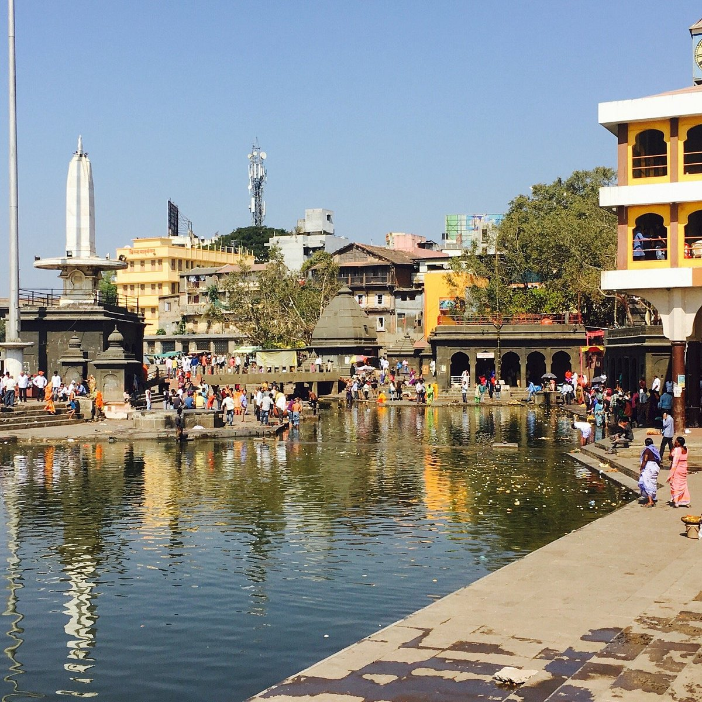
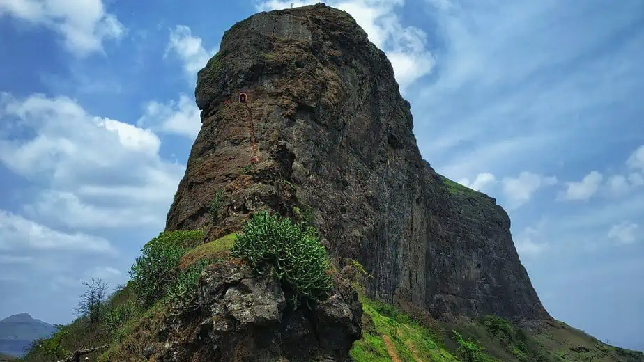
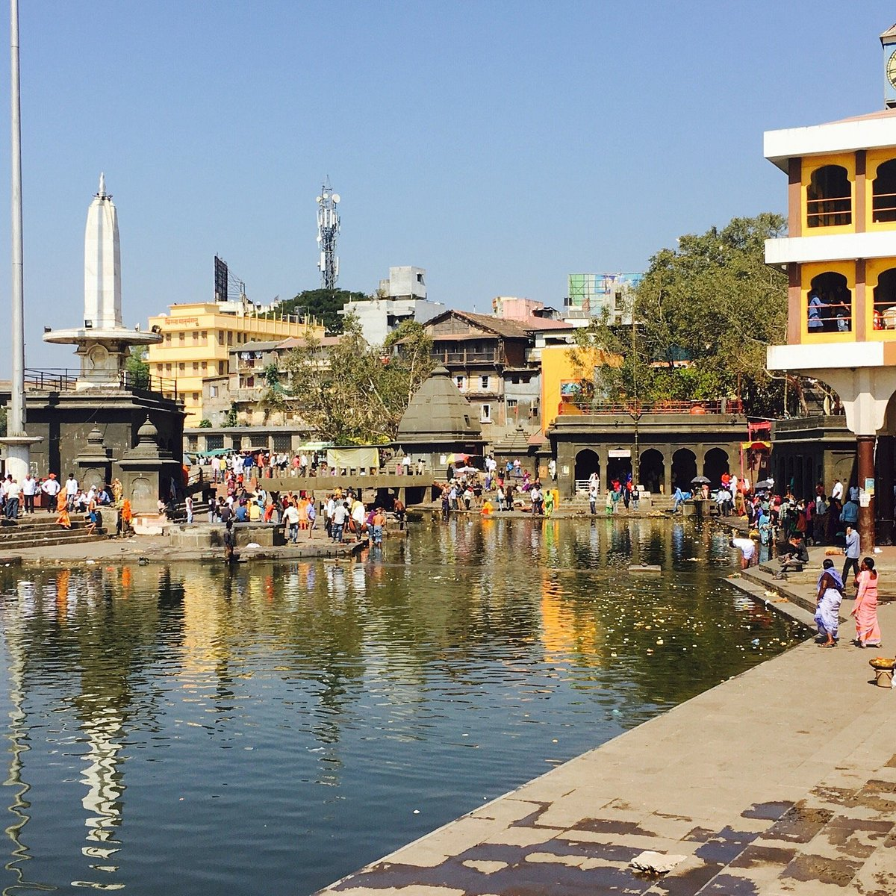
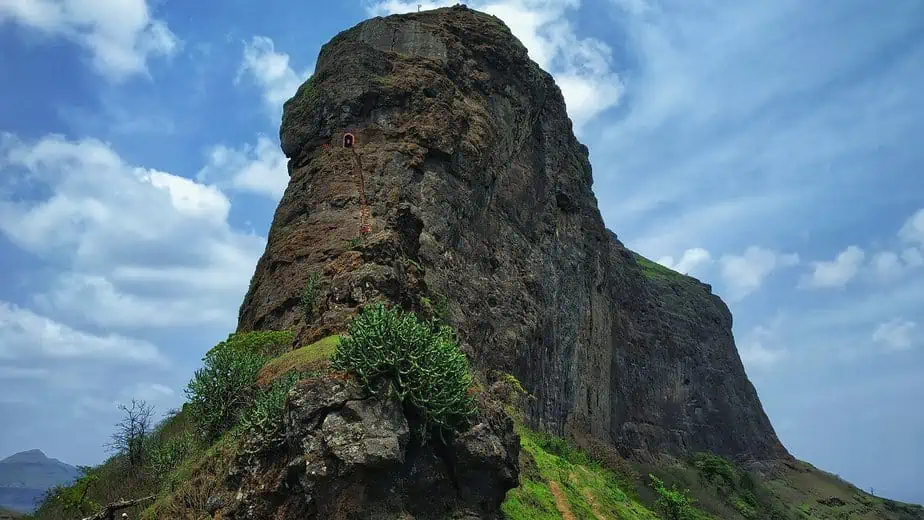
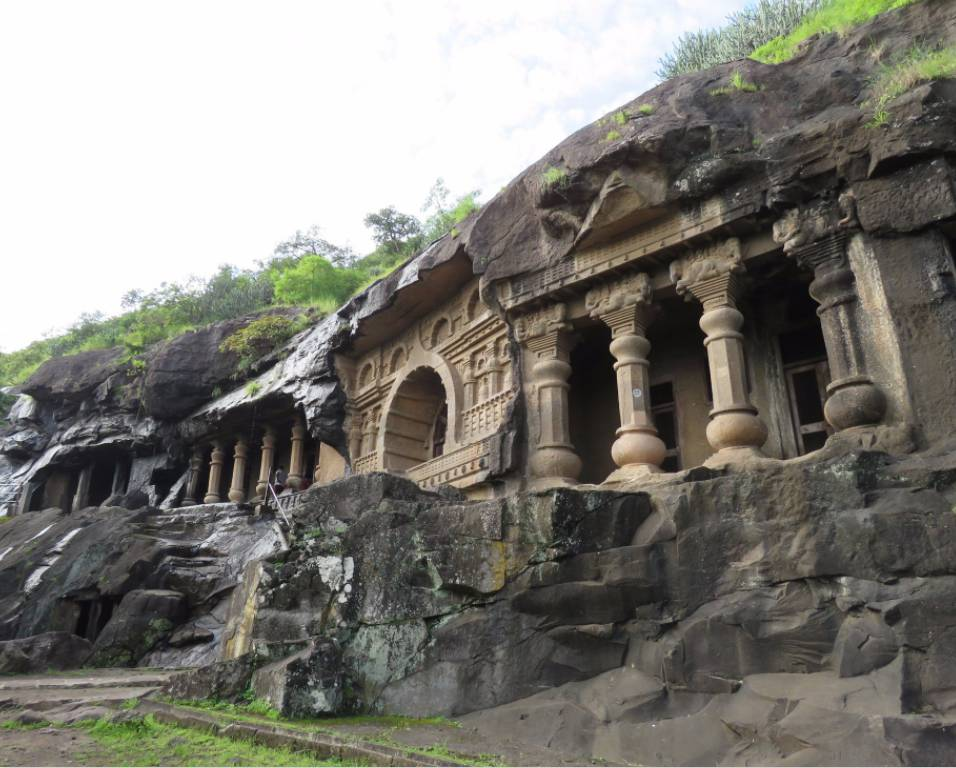
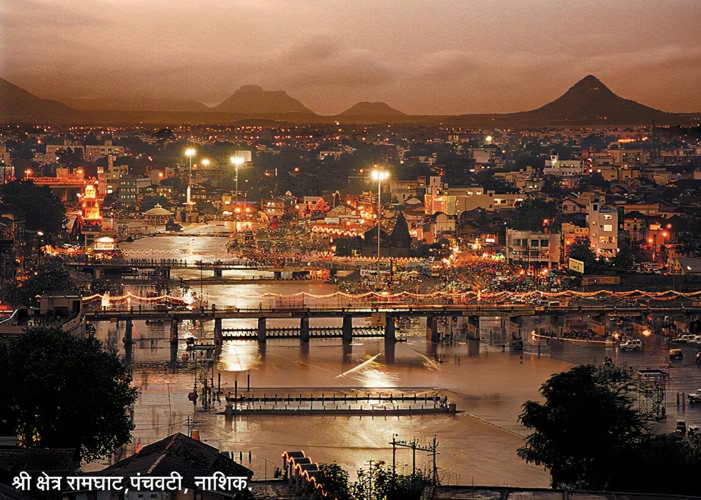
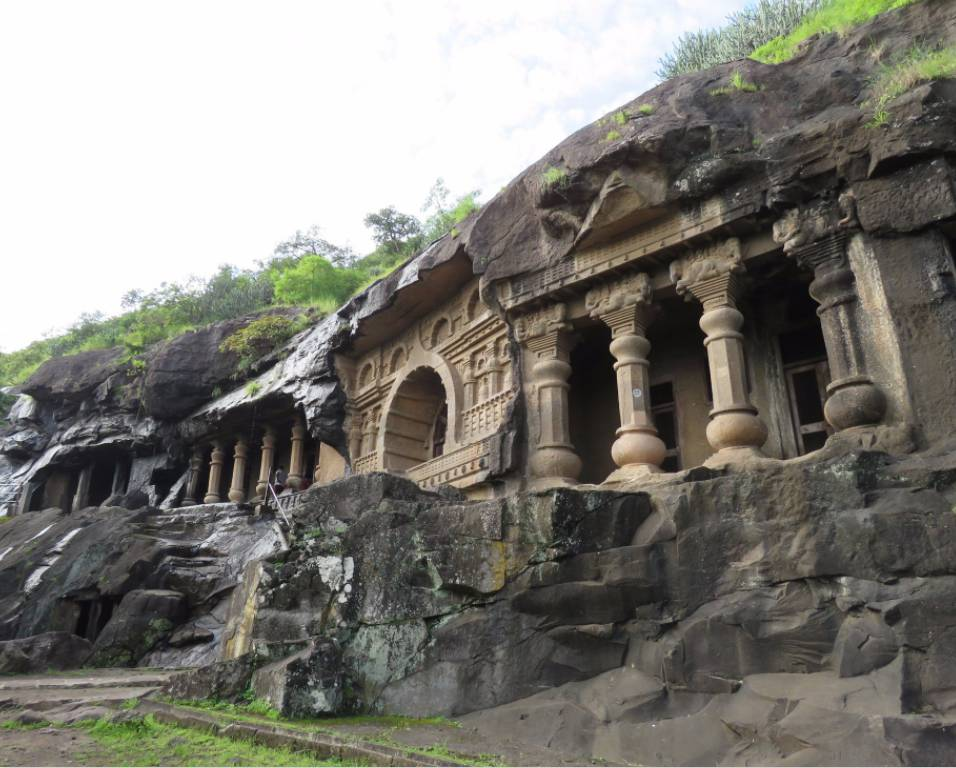
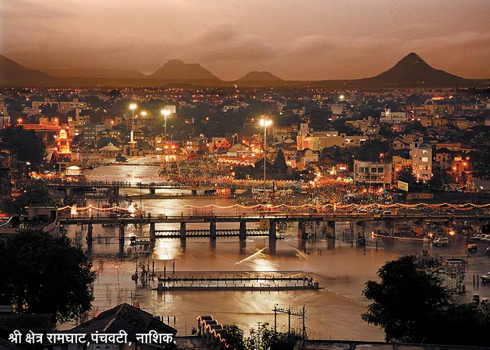
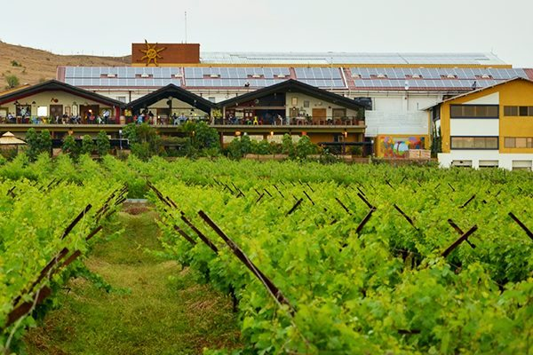
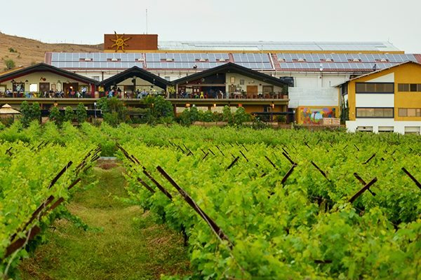

About
Nashik is an ancient holy city in Maharashtra, a state in western India. It' s known for its links to the “Ramayana” epic poem. On the Godavari River is Panchavati, a temple complex. Nearby, Lord Rama was thought to have bathed at Ram Kund water tank, today attended by Hindu devotees. Shri Kalaram Sansthan Mandir is an ancient shrine to Rama, while Rama and Sita are said to have worshipped at Sita Gufaa caves.
The city located about 190 km north of state capital Mumbai, is called the “Wine Capital of India” as half of India's vineyards and wineries are located in Nashik Nashik formerly it was known as Gulshanabad and it is important historically, mythologically, socially and culturally city.
Nashik is also known as Mini Maharashtra, because the climate and soil conditions of Surgana, Peth, Igatpuri resembles with Konkan. Niphad, Sinnar, Dindori, Baglan blocks are like Western Maharashtra and yeola, Nandgaon, Chandwad blocks are like Vidarbha Region.
Top Attractions in Nashik:-
- Sula Vineyards.
- Saptashringi Devi Temple.
- Kalaram Temple.
- Soma Vine Village
- Vallonne Vineyards.
- Pandav Leni.
- York Winery & Tasting Room.
- Anjneri Hill.
Gallary
 




 



 
